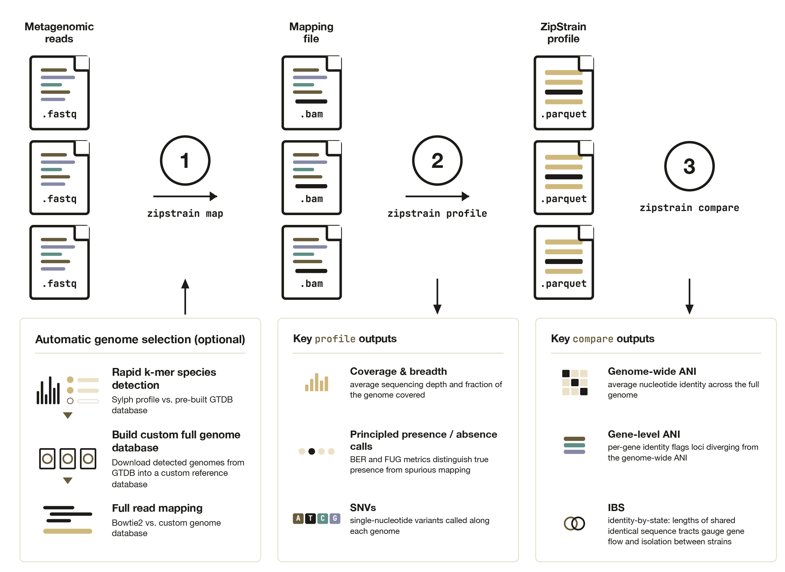

User Manual
An overview of ZipStrain and the data it generates
ZipStrain is a program for microbial metagenomic analysis. The primary use cases for ZipStrain are to accurately determine organism presence / absence in a community, and to perform detailed comparisons between organisms in different samples.
There are two ways of interacting with ZipStrain: the Python CLI and the Nextflow pipeline. Both run the same underlying analysis and produce the same output tables; they differ in how the work is orchestrated and how much infrastructure they assume.
Python CLI (zipstrain map | profile | compare)
- Pros: nothing to install beyond ZipStrain and its dependencies; easy to run one step at a time and inspect intermediates; simplest path on a laptop, a single workstation, or an interactive session; the newer matrix-store comparison workflow is CLI-only.
- Cons: you drive the steps yourself; large cohorts on a cluster mean managing SLURM submission and resumption by hand (the commands support
--execution-mode slurm, but Nextflow does more of this for you). - Best when: you are exploring, working on a handful of samples, prototyping, or want the matrix workflow.
Nextflow pipeline (nextflow run OlmLab/ZipStrain)
- Pros: one command runs the whole map → profile → compare chain; built-in
-resume, containerization (Docker/Singularity/Apptainer), and scheduler execution (SLURM, etc.) via execution profiles; scales cleanly to large cohorts and shared HPC systems; reproducible across machines. - Cons: requires Nextflow (and usually a container engine) and some config setup; less convenient for poking at a single intermediate step; the matrix comparison workflow is not yet wired into Nextflow.
- Best when: you are processing many samples, running on a cluster, or want a reproducible, restartable, containerized pipeline.
A common pattern is to prototype with the CLI on a few samples, then scale the same analysis out with Nextflow. The ZipStrain Command Line Interface section below documents the CLI; Nextflow Implementation covers the pipeline.
ZipStrain Command Line Interface
A typical ZipStrain run has three steps, each its own top-level command:
zipstrain map— turn reads into sorted BAM fileszipstrain profile— profile those BAMs at nucleotide resolutionzipstrain compare— compare samples to each other by ANI

Two more commands round it out: zipstrain test checks your environment, and zipstrain utilities groups the lower-level helpers that the three main commands are built from (you rarely call these directly).
For end-to-end, copy-pasteable examples, start with the Tutorial; for the files each command writes, see Expected output. This page is the reference for what each command does and its major options.
Every command supports -h/--help, and grouped utilities take a subcommand:
zipstrain --help # top-level commands
zipstrain <command> --help # e.g. zipstrain profile --help
zipstrain utilities <cmd> --help # e.g. zipstrain utilities build-genome-db --help
zipstrain --help
Usage: zipstrain [OPTIONS] COMMAND [ARGS]...
ZipStrain — fast strain-level metagenomic profiling and comparison.
A typical run goes: map reads to BAMs, profile them at nucleotide
resolution, then compare samples by ANI.
Developed by Parsa Ghadermazi and Matt Olm in the Olm Lab at the University
of Colorado Boulder.
Options:
--version Show the version and exit.
-h, --help Show this message and exit.
Commands:
test Check your environment is ready.
map Map reads to sorted BAMs.
profile Profile BAMs at nucleotide resolution.
compare Compare samples (genomes or genes).
utilities Lower-level helper commands.
Source & docs: https://github.com/OlmLab/ZipStrain
Run logging
Every map, profile, and compare run writes two logging files into its output directory (--output-dir for map, --run-dir for profile/compare), so you can tell at a glance whether a run is still going, finished, or crashed:
zipstrain_run.log— a human-readable, append-only timeline: a header (ZipStrain version, full command, working directory, process id, start time) followed by a timestamped line for each step. On success it ends withCOMPLETED; on failure it ends withCRASHED(orABORTEDfor a Ctrl-C), the step that was running, and the full Python traceback.zipstrain_status.json— a machine-readable snapshot withstatus(running/completed/crashed/aborted),last_step,pid, timestamps,elapsed_seconds, and — on failure —error_type,error_message, andfailed_during_step.
A quick way to check on a run:
# What is (or was) it doing?
grep -E 'RUNNING|STEP|COMPLETED|CRASHED|ABORTED' out_dir/zipstrain_run.log | tail
# Just the status
python -c "import json; print(json.load(open('out_dir/zipstrain_status.json'))['status'])"
If status is running but nothing has updated for a long time, use the recorded pid to check whether the process is still alive (e.g. ps -p <pid>). Because the log is append-only, re-running in the same directory (for example to resume map) adds a fresh block rather than overwriting the previous run's history.
Map
zipstrain map
Turn sequencing reads into sorted, indexed BAM files ready for zipstrain profile. You provide a reads table (sample_name,reads1[,reads2]). If you also pass --reference-fasta (plus its --stb-file), ZipStrain maps against it with Bowtie2. If you omit the reference, ZipStrain runs Sylph to auto-pick reference genomes from the reads, downloads and caches them, and maps against the built reference — so a minimal run needs only a reads table, an output directory, and (for the Sylph route) a database and cache directory.
Alongside the BAMs it writes the reference FASTA + STB and a samples.txt you can hand straight to zipstrain profile. On the Sylph route it also writes a reference_genomes_taxonomy.tsv that profile auto-discovers to populate genome_taxonomy.
# Sylph auto-reference (no reference on hand)
zipstrain map \
--reads-table reads.csv \
--output-dir out_map \
--sylph-db gtdb-r220-c200-dbv1.syldb \
--genome-cache-dir genome_cache
# Map against a reference you already have
zipstrain map \
--reads-table reads.csv \
--reference-fasta reference_genomes.fna \
--stb-file reference_genomes.stb \
--output-dir out_map
Major options:
-i, --reads-table/-o, --output-dir(required) — reads CSV and output directory-f, --reference-fasta+-s, --stb-file— map against an existing reference (skips Sylph)--sylph-db/--sylph-db-url/--genome-cache-dir— Sylph database and genome cache for the auto-reference route--predict-genes— also run prodigal to emit a gene FASTA for later gene-level profiling--non-competitive— pass-ato Bowtie2 (report all alignments)--force— redo every step even if cached outputs exist (see resume note below)-t, --threads(default:4)
zipstrain map is resumable: re-running with the same --output-dir skips any stage whose output is already complete — per-sample Sylph tables, the built reference, the Bowtie2 index, and each sorted+indexed BAM. So if a run crashes partway through (say, on the third sample), just run the same command again and it picks up where it left off. Completion is judged conservatively (a BAM only counts as done once its .bai index exists, writes are atomic), so a half-written file from a crash is never reused. Pass --force to ignore the cache and rebuild everything.
zipstrain map --help
Usage: zipstrain map [OPTIONS]
Map sequencing reads to BAM files, ready for `zipstrain profile`.
Provide a reads table (``sample_name,reads1[,reads2]``). If you do not pass
``--reference-fasta``, ZipStrain runs Sylph to pick reference genomes from
the reads automatically, downloading and caching them, then maps against the
built reference. Outputs sorted, indexed BAMs, the reference FASTA + STB,
and a ``samples.txt`` you can hand straight to ``zipstrain profile``.
Required inputs:
-i, --reads-table TEXT CSV of reads to map, with columns
'sample_name,reads1[,reads2]' (reads2 blank/absent
for single-end). [required]
-o, --output-dir TEXT Directory to write BAMs, the reference FASTA/STB,
and a samples.txt ready for `zipstrain profile`.
[required]
Reference (Sylph auto-picks one if omitted):
-f, --reference-fasta TEXT Reference FASTA to map against. If omitted,
Sylph automatically picks and builds a reference
from the reads.
-s, --stb-file TEXT Scaffold-to-genome mapping file. Required when
--reference-fasta is provided.
--sylph-db TEXT Path to the Sylph database. Used when no
--reference-fasta is given; downloaded from
--sylph-db-url if the path does not exist.
--sylph-db-url TEXT URL to download the Sylph database from when
--sylph-db is missing. [default:
http://faust.compbio.cs.cmu.edu/sylph-
stuff/gtdb-r220-c200-dbv1.syldb]
--genome-cache-dir TEXT Directory that caches genome FASTAs downloaded
during Sylph-based reference building. Required
when no --reference-fasta is given.
Options:
--predict-genes Also run prodigal to emit a gene FASTA (for gene-
level profiling via `profile --gene-fasta`).
--non-competitive Pass -a to Bowtie2 for non-competitive mapping
(report all alignments).
--force Redo every step from scratch, ignoring cached
outputs. By default `map` resumes: completed Sylph
tables, reference, index, and BAMs are reused.
-t, --threads INTEGER Threads for Sylph, Bowtie2, and samtools. [default:
4]
Other options:
-h, --help Show this message and exit.
Profile
zipstrain profile
Profile a batch of BAM files at nucleotide resolution, producing per-position base counts plus per-genome and per-gene summary tables. Profiling needs a set of assets (null model, BED file, genome-length table, optional gene ranges, profiling contract). You can supply any of these, but any you omit are generated automatically into a profiling_assets/ directory inside --run-dir and reused on later runs when the inputs are unchanged. A minimal run therefore needs only --input-table, --reference-fasta, and --stb-file.
By default each sample also gets an SNV table (<sample>_SNVs.parquet) and a presence (present/absent) call in its genome stats. Profile outputs are parquet-only; use zipstrain utilities parquet-to-csv when you want a CSV copy of a specific table. See Expected output for the full file list.
# Minimal run — assets auto-generated and cached in run_dir/profiling_assets
zipstrain profile \
--input-table samples.txt \
--reference-fasta reference_genomes.fna \
--stb-file reference_genomes.stb \
--run-dir out_profile
Major options:
-i, --input-table,-f, --reference-fasta,-s, --stb-file,-r, --run-dir(required)--gene-fasta— enables gene-level profiling (auto-generates a gene range table)-u/-b/-l/-g/--profiling-contract— supply pre-built assets to override auto-generation;--force-prepareregenerates them all- Read filters:
--min-mapq(0),--min-baseq(13),--min-read-ani(0.95),--read-inclusion(paired). The read-ANI floor and paired-read defaults filter low-identity / mis-mapped reads (matching inStrain). - Allele filters: the Poisson null model assumes a 1% total error rate by default and removes counts at or below its error ceiling.
--min-freq(0) can additionally remove alleles below a chosen within-position frequency; for example,--min-freq 0.01requires at least 1%. The denominator is the original A+C+G+T depth before allele filtering. - Presence & SNVs:
--no-snvs,--snv-min-cov(5),--presence-ber(0.5),--presence-fug(1.0),--presence-min-cov-use-fug(2.0),--presence-min-coverage(0.1),--genome-taxonomy - Execution:
-n, --num-procs(8),-m, --max-concurrent-batches(5),-t, --task-per-batch(10),-e, --execution-mode(local/slurm),-c, --slurm-config,-o, --container-engine,--container-address
zipstrain profile --help
Usage: zipstrain profile [OPTIONS]
Run BAM file profiling in batches using the specified execution mode and
container engine.
Any profiling assets (null model, bed file, genome length table, gene range
table, profiling contract) that are not supplied explicitly are generated
automatically into a ``profiling_assets`` directory inside ``run-dir`` and
reused on subsequent runs when the inputs are unchanged. This means a
minimal run needs only ``--input-table``, ``--reference-fasta``, and
``--stb-file``.
Required inputs:
-i, --input-table TEXT Path to the input table in TSV format containing
sample names and paths to bam files. [required]
-f, --reference-fasta TEXT Reference FASTA. Used for mpileup (adds
ref_base_bitmask) and required to auto-generate
the bed/genome-length assets when they are not
supplied.
-s, --stb-file TEXT Path to the scaffold-to-genome mapping file.
[required]
-r, --run-dir TEXT Directory to save the run data (sample outputs,
profiling_assets, and logs). [required]
Optional inputs:
--gene-fasta TEXT Gene FASTA. When provided, a gene range table is auto-
generated from it for gene-level profiling.
Optional pre-built assets (auto-generated if omitted):
-u, --null-model TEXT Pre-built null model parquet file. Auto-
generated into <run-dir>/profiling_assets if
not provided.
-g, --gene-range-table TEXT Pre-built gene range table file. Overrides
--gene-fasta auto-generation.
--profiling-contract TEXT Pre-built profiling_contract.json. When
provided, its hashes are written into each
profile parquet metadata. Auto-generated
otherwise.
-b, --bed-file TEXT Pre-built BED file for profiling regions.
Auto-generated into <run-
dir>/profiling_assets if not provided.
-l, --genome-length-file TEXT Pre-built genome length file. Auto-generated
into <run-dir>/profiling_assets if not
provided.
Profiling parameters:
--error-rate FLOAT Error rate used when auto-generating the
null model. [default: 0.01]
--max-total-reads INTEGER Maximum coverage considered when auto-
generating the null model. [default: 50000]
--p-threshold FLOAT Significance threshold used when auto-
generating the null model. [default: 0.05]
--model-type [poisson] Null model type used when auto-generating
the null model. [default: poisson]
--force-prepare Regenerate all auto-generated profiling
assets even if valid cached copies exist.
--min-mapq INTEGER Minimum mapping quality for a read to be
used during profiling. [default: 0]
--min-baseq INTEGER Minimum base quality for a base to be
counted during profiling. [default: 13]
--min-freq FLOAT Minimum within-position allele frequency to
retain after null-model filtering.
[default: 0.0]
--min-read-ani FLOAT Minimum read ANI (from the NM tag / aligned
span) to use a read; filters low-identity/mis-
mapped reads. Reads lacking an NM tag are
kept. Pass 0 to disable. [default: 0.95]
--read-inclusion [proper-pairs|paired|all-mapped]
Which mapped reads are eligible: 'paired'
keeps single-end reads and concordant pairs
but drops half-mapped orphans; 'proper-pairs'
keeps only proper pairs; 'all-mapped' keeps
every mapped read. [default: paired]
SNV calling and presence:
--no-snvs Do not call SNVs/SNPs (per-sample
<sample>_SNVs.parquet). SNV calling needs
--reference-fasta.
--snv-min-cov INTEGER Minimum coverage for a site to be eligible
as an SNV/SNP call. [default: 5]
--presence-ber FLOAT Breadth-error-ratio threshold for the genome
present/absent call (the Metapresence paper
recommends ~0.8). [default: 0.5]
--presence-fug FLOAT FUG threshold for the present/absent call at
low coverage. A genome is present when
fug/0.632 exceeds this (fug ~ 0.632 under
uniform coverage, so 1.0 means at least as
uniform as random). [default: 1.0]
--presence-min-cov-use-fug FLOAT
Coverage above which the present/absent call
uses BER alone (below it, FUG is also
required). [default: 2.0]
--presence-min-coverage FLOAT Minimum mean coverage required to call a
genome present. [default: 0.1]
--genome-taxonomy TEXT Optional genome->taxonomy TSV to add a
genome_taxonomy column to genome_stats.
Auto-discovered next to the reference/STB
when produced by `zipstrain map` (Sylph
route).
Running parameters:
-n, --num-procs INTEGER Number of processors to use for each
profiling task. [default: 8]
-m, --max-concurrent-batches INTEGER
Maximum number of concurrent batches to run.
[default: 5]
-p, --poll-interval INTEGER Polling interval in seconds to check the
status of batches. [default: 1]
-t, --task-per-batch INTEGER Number of tasks to include in each batch.
[default: 10]
-e, --execution-mode TEXT Execution mode: 'local' or 'slurm'.
[default: local]
-c, --slurm-config TEXT Path to the SLURM configuration file in json
format. Required if execution mode is
'slurm'.
-o, --container-engine TEXT Container engine to use: 'local', 'docker'
or 'apptainer'. [default: local]
--container-address TEXT Optional container image/address override.
Defaults to the current ZipStrain version
tag for docker/apptainer.
Other options:
-h, --help Show this message and exit.
Comparison
zipstrain compare
Compare profiled samples to each other, one row per genome per sample pair, and write <run-dir>/all_comparisons.parquet (+ a companion CSV). By default it compares at the genome level; add --compare-genes for gene-level comparison. --profile-db accepts a CSV of profile_name,profile_location rows directly (no need to run build-profile-db first) or a pre-built profile-database parquet.
There are two engines. --method standard (default) does direct pairwise comparison and is simplest. --method matrix builds a reusable matrix store, which pays off for repeated all-vs-all comparison. Both are resumable and extendable: re-running with the same --run-dir and a profiles table that includes new samples computes only the new pairs. See the Tutorial for a worked matrix walk-through and Expected output for the columns.
# Standard genome comparison from a CSV of profiles
zipstrain compare \
--profile-db profiles.csv \
--run-dir out_compare
# Matrix method, reusable for repeated all-vs-all
zipstrain compare \
--profile-db profiles.csv \
--run-dir out_compare \
--method matrix \
--stb-file reference_genomes.stb
Major options:
--profile-db,-r, --run-dir(required)--method(standard/matrix) and--compare-genes— pick the engine and genome vs. gene level--scope(allfor genomes,all:allfor genes),--min-cov(5),--min-gene-compare-len(100)-a, --ani-method(popani,conani,cosani_<threshold>),--calculate(ani/ibs/identical_genes/all)--stb-file— required for--method matrix- Matrix method:
--bed-file,--gene-range-table(both auto-discovered fromprofiling_assets),--backend(numpy/torch…),--memory-limit-gb(16) - Standard method:
--engine(polars/duckdb),-d, --duckdb-memory-limit,--duckdb-threads, plus the same execution/container options asprofile - Output:
--no-csv/--force-csv --comp-db-file/--allow-mismatch— resume from an existing comparison / skip profile-contract validation
zipstrain compare --help
Usage: zipstrain compare [OPTIONS]
Compare profiled samples at the genome level (default) or gene level
(--compare-genes).
``--profile-db`` may be a CSV of ``profile_name,profile_location`` rows, so
there is no need to run ``zipstrain utilities build-profile-db`` first; a
pre-built profile-database parquet is also accepted.
Both methods write ``<run-dir>/all_comparisons.parquet``. Re-running with
the same ``--run-dir`` and a profiles table that includes new samples
extends the existing comparison, computing only the new pairs.
Required inputs:
--profile-db TEXT Profiles to compare: either a CSV with
'profile_name,profile_location' columns (built in
memory, no build-profile-db needed) or a pre-built
profile-database parquet. [required]
-r, --run-dir TEXT Directory to save the run data. [required]
Comparison parameters:
--method [standard|matrix] Comparison engine: 'standard' (direct
pairwise) or 'matrix' (reusable matrix
store, good for repeated all-vs-all).
[default: standard]
--compare-genes Compare genes instead of genomes.
--scope TEXT Comparison scope. Defaults to 'all' for
genomes and 'all:all' for genes.
--min-cov INTEGER Minimum coverage to consider a position.
[default: 5]
--min-gene-compare-len INTEGER Minimum gene length to consider for
comparison. [default: 100]
--stb-file TEXT Scaffold-to-genome mapping file. Required
for --method matrix.
-a, --ani-method TEXT ANI calculation method (e.g., 'popani',
'conani', 'cosani_0.4'). [default: popani]
--calculate TEXT Genome metrics to compute (genome mode
only): ani, ibs, identical_genes. Combine
with '+', or use all. [default: all]
--comp-db-file TEXT Optional existing comparison parquet to
resume/extend (standard method). Auto-
detected from --run-dir if omitted.
--allow-mismatch Skip profile contract validation when
building the profile database from a CSV.
Matrix method (--method matrix):
--bed-file TEXT BED file for the matrix store (--method
matrix). Auto-discovered from
profiling_assets if omitted.
--gene-range-table TEXT Gene range table for gene ANI (--method
matrix). Auto-discovered from
profiling_assets if omitted.
--backend [numpy|torch|torch-cpu|torch-cuda|torch-mps]
Compute backend for --method matrix (numpy,
or torch on CPU/CUDA/MPS). [default: numpy]
--memory-limit-gb FLOAT Approximate memory budget for --method
matrix. [default: 16.0]
Output:
--no-csv Do not write a companion .csv next to the comparison parquet.
--force-csv Write the companion .csv even when the estimated size exceeds
100 MB.
Standard method / engine:
--engine [polars|duckdb] Comparison engine for standard compare
tasks. [default: polars]
-d, --duckdb-memory-limit TEXT DuckDB memory limit for compare tasks (e.g.,
2GB).
--duckdb-threads INTEGER Number of DuckDB worker threads for compare
tasks.
-m, --max-concurrent-batches INTEGER
Maximum number of concurrent batches to run.
[default: 5]
-p, --poll-interval INTEGER Polling interval in seconds to check the
status of batches. [default: 1]
-t, --task-per-batch INTEGER Number of tasks to include in each batch.
[default: 10]
-e, --execution-mode TEXT Execution mode: 'local' or 'slurm'.
[default: local]
-s, --slurm-config TEXT Path to the SLURM configuration file in json
format. Required if execution mode is
'slurm'.
-c, --container-engine TEXT Container engine to use: 'local', 'docker'
or 'apptainer'. [default: local]
--container-address TEXT Optional container image/address override.
Defaults to the current ZipStrain version
tag for docker/apptainer.
Other options:
-h, --help Show this message and exit.
Test
zipstrain test
Run a lightweight health check that confirms ZipStrain and its external dependencies are importable and callable. Run it right after installation. It takes no options.
zipstrain test
zipstrain test --help
Usage: zipstrain test [OPTIONS]
Run a lightweight ZipStrain health check.
Options:
-h, --help Show this message and exit.
Utilities
The zipstrain utilities group collects the lower-level helpers that map, profile, and compare are built from — asset preparation, single-BAM/single-pair operations, matrix-store management, format conversions, and more. Most users never call these directly, but they are useful for building custom pipelines or running one step in isolation. Use zipstrain utilities <command> --help for full details of any one.
zipstrain utilities --help
Usage: zipstrain utilities [OPTIONS] COMMAND [ARGS]...
The commands in this group are related to various utility functions that
mainly prepare input files for profiling and comparison.
Options:
-h, --help Show this message and exit.
Commands:
adjust-sequence-errors Apply ZipStrain's sequence-error adjustment to...
append-matrix-db Append new profiles to an existing matrix store.
build-genome-db Build a reference bundle from an abundance table.
build-matrix-db Build a matrix store directly from classic...
build-null-model Build a null model for sequencing errors based...
build-profile-db Build a profile database from the given CSV file.
chunk-genome-compare Run classic genome compare over one pair-table...
gene-range-table Main function to build and save the gene...
generate-sample-pair Generate a sample-pair table ready for...
generate_stb Generate a scaffold-to-genome mapping file from...
get-snp-reference Emit profile-like rows that are SNPs relative...
matrix-compare Run resumable matrix compare on all...
matrix-compare-export Export a matrix compare DuckDB database to...
matrix-db-to-hdf5 Convert a legacy DuckDB matrix database into...
merge-stat-tables Concatenate stat tables and add a sample column...
merge_parquet Merge multiple Parquet files in a directory...
parquet-to-csv Convert a parquet table to CSV.
prepare_profiling Prepare the files needed for profiling bam...
presence-profile Generate a presence profile for genomes based...
process-read-locs Process read locations and save them to a...
process_mpileup Process an mpileup stream and save the results in...
profile-single Profile a single BAM file using the provided...
single_compare_gene Compare two profile parquets and calculate...
single_compare_genome Compare two profile parquets and...
sort-profile Sort a classic profile parquet in place and...
to-complete-table Generate the not-yet-completed...
Utility Commands At A Glance
| Command | Purpose |
|---|---|
zipstrain utilities build-null-model |
Build sequencing-error null model |
zipstrain utilities merge_parquet |
Merge parquet files |
zipstrain utilities merge-stat-tables |
Merge gene/genome stat parquet files with sample labels |
zipstrain utilities process_mpileup |
Convert mpileup stream to parquet |
zipstrain utilities generate-sample-pair |
Create all non-redundant standard-profile sample pairs |
zipstrain utilities chunk-genome-compare |
Compare many genome-level pairs in Python-side parallel batches |
zipstrain utilities build-profile-db |
Build profile DB parquet |
zipstrain utilities build-matrix-db |
Build the current per-sample genome matrix store directly from profile parquets |
zipstrain utilities append-matrix-db |
Append new profiles into an existing matrix store |
zipstrain utilities matrix-db-to-hdf5 |
Convert a DuckDB matrix database into the current matrix-store format |
zipstrain utilities matrix-compare |
Resumable all-vs-all matrix compare into a DuckDB compare DB |
zipstrain utilities matrix-compare-export |
Export a matrix compare DuckDB to parquet |
zipstrain utilities parquet-to-csv |
Convert any parquet table to CSV |
zipstrain utilities build-genome-db |
Build local genome reference bundle from abundance table |
zipstrain utilities presence-profile |
Presence profile from coverage + read locations |
zipstrain utilities process-read-locs |
Process read-location stream |
zipstrain utilities generate_stb |
Create scaffold-to-genome map from genome files |
zipstrain utilities gene-range-table |
Create gene range table |
zipstrain test |
Validate local installation/dependencies |
The commands below run individual profiling and comparison steps by hand (the map, profile, and compare commands orchestrate them for you).
zipstrain utilities prepare_profiling
Prepare profiling database assets.
zipstrain utilities prepare_profiling \
--reference-fasta reference.fasta \
--stb-file mapping.stb \
--output-dir profiling_assets
Options:
-r, --reference-fasta(required)-g, --gene-fasta(optional)-s, --stb-file(required)-e, --error-rate(default:0.01)-m, --max-total-reads(default:50000)-p, --p-threshold(default:0.05)-t, --model-type(default:poisson)-o, --output-dir(required)
Outputs:
genomes_bed_file.bedgene_range_table.tsvgenome_lengths.parquetnull_model.parquetprofiling_contract.json
zipstrain utilities profile-single
Profile a single BAM.
zipstrain utilities profile-single \
--bed-file genomes_bed_file.bed \
--bam-file sample.bam \
--stb-file mapping.stb \
--null-model profiling_assets/null_model.parquet \
--profiling-contract profiling_assets/profiling_contract.json \
--num-chunks 24 \
--max-concurrency 4 \
--output-dir sample_profile
Options:
-r, --reference-fasta(optional) — when provided, profiling also recordsref_base_bitmaskand addsref_anito gene/genome stat tables-b, --bed-file(required)-a, --bam-file(required)-s, --stb-file(required)-m, --null-model(required)-g, --gene-range-table(optional)--profiling-contract(optional)-n, --num-chunks(default:24) — number of BED chunks to create-c, --max-concurrency(default:4) — how many chunks run simultaneously--min-mapq(default:0)--min-baseq(default:13)--min-freq(default:0) — after the null-model test, retain an allele only whencount / original A+C+G+T coverage >= min_freq--min-read-ani(default:0.95) — filters low-identity / mis-mapped reads before pileup using the BAMNMtag and aligned query span; reads without anNMtag are kept; pass0to disable--read-inclusion(proper-pairs|paired|all-mapped, default:paired)-o, --output-dir(required)
Read-inclusion modes:
proper-pairs: keep only mapped read pairs carrying the alignerPROPER_PAIRflagpaired(default): keep single-end reads and concordant pairs, but drop half-mapped orphan pairs (mate unmapped) — matches inStrain'snon_discordantintentall-mapped: keep any mapped read, whether paired or single-end
Outputs include:
<sample>_profile.parquet<sample>_genome_stats.parquet<sample>_gene_stats.parquet
zipstrain utilities adjust-sequence-errors applies the same strict null-model boundary to an existing profile parquet. It also accepts --min-freq with the same definition and default (0) as profiling. If the profile contains coverage above the supplied model, the command fails and reports the minimum --max-total-reads needed to rebuild that model.
When --reference-fasta is provided during profiling, the profile parquet includes ref_base_bitmask.
In the same case, the generated genome and gene stat tables also include a ref_ani column.
ref_ani is the percentage of covered sites whose observed allele set still contains the reference allele after ZipStrain's sequence-error adjustment.
ref_base_bitmask uses this encoding:
1= reference baseA2= reference baseC4= reference baseG8= reference baseT0= non-ACGT or unknown reference base
This is a one-hot bitmask, so current profiles are expected to contain only 0, 1, 2, 4, or 8 in this column.
zipstrain utilities get-snp-reference
Emit profile-like rows that are SNPs relative to the reference from a classic profile parquet that includes ref_base_bitmask.
zipstrain utilities get-snp-reference \
--profile-file sample_profile.parquet \
--min-cov 5 \
--output-file sample_reference_snps.parquet
Options:
-p, --profile-file(required)-c, --min-cov(default:5)-o, --output-file(required)
The output preserves the input profile-like columns and includes only positions that:
- have coverage
>= min_cov - have a known reference base in
ref_base_bitmask - do not retain the reference allele after profile sequence-error adjustment
This uses the same reference-sharing logic used to populate ref_ani in the gene and genome stat tables.
zipstrain utilities single_compare_genome
zipstrain utilities single_compare_genome \
--profile-location-1 sample_a.parquet \
--profile-location-2 sample_b.parquet \
--stb-file mapping.stb \
--output-file out.parquet
Options:
--profile-location-1/--profile-1(required)--profile-location-2/--profile-2(required)-s, --stb-file(required)-c, --min-cov(default:5)-l, --min-gene-compare-len(default:100)-o, --output-file(required)-g, --genome(default:all)-a, --ani-method(default:popani)--calculate(default:all)--engine(polars|duckdb, default:polars)--duckdb-memory-limit--duckdb-temp-directory--duckdb-threads
zipstrain utilities generate-sample-pair
zipstrain utilities generate-sample-pair \
--profile-dir profiles \
--output-file sample_pairs.parquet
This writes a parquet table with:
sample_name_1sample_name_2profile_location_1profile_location_2
Options:
-p, --profile-dir(required)-o, --output-file(required)--write-batch-size(default:100000)
zipstrain utilities chunk-genome-compare
zipstrain utilities chunk-genome-compare \
--pair-table genome_pairs.parquet \
--stb-file mapping.stb \
--output-file chunk_compare.parquet \
--workers 8 \
--engine polars
This command runs standard genome comparisons directly inside Python for one pair-table chunk. It is intended as an experimental utility for benchmarking or ad hoc compare runs, and does not change the main workflow commands.
Accepted pair-table schemas:
sample_name_1,sample_name_2,profile_location_1,profile_location_2sample_name_1,sample_name_2,profile_1,profile_2sample_1,sample_2,profile_1,profile_2profile_location_1,profile_location_2profile_1,profile_2
Options:
-p, --pair-table(required)-s, --stb-file(required)-o, --output-file(required)-w, --workers(defaults to CPU count capped by pair count)-c, --min-cov(default:5)-l, --min-gene-compare-len(default:100)-g, --genome(default:all)-a, --ani-method(default:popani)--calculate(default:all)--engine(polars|duckdb, default:polars)--duckdb-memory-limit--duckdb-temp-directory--duckdb-threads
The final console summary includes:
- total pairs processed
- total genome-level output rows written
- total elapsed time
- average wall time per pair
- average compute time per pair
- average time per genome-level output row
zipstrain utilities single_compare_gene
zipstrain utilities single_compare_gene \
--profile-location-1 sample_a.parquet \
--profile-location-2 sample_b.parquet \
--stb-file mapping.stb \
--scope all:all \
--output-file out.parquet
Options:
--profile-location-1/--profile-1(required)--profile-location-2/--profile-2(required)-s, --stb-file(required)-c, --min-cov(default:5)-l, --min-gene-compare-len(default:100)-o, --output-file(required)-g, --scope(default:all:all)-a, --ani-method(default:popani)--engine(polars|duckdb, default:polars)--duckdb-memory-limit--duckdb-temp-directory--duckdb-threads
zipstrain utilities to-complete-table
zipstrain utilities to-complete-table \
--profile-db profile_db.parquet \
--comp-db-file current_compare.parquet \
--output-file remaining_pairs.csv
Options:
--profile-db(required)--comp-db-file(optional)-o, --output-file(required)
Output columns:
sample_name_1sample_name_2profile_location_1profile_location_2
Notes:
- this command does not need
--scope,--min-cov,--min-gene-compare-len, or--stb-file - it only compares the sample-pair universe implied by the profile DB against the pairs already present in the current genome comparison parquet
zipstrain utilities build-genome-db
zipstrain utilities build-genome-db \
--tool sylph \
--abundance-table sylph_abundance.tsv \
--cache-dir genome_cache \
--output-dir .
Important options:
--download-retries(default:8)--retry-backoff-seconds(default:10.0)--download-workers(default:1)
Automatically build a reference database
This guide shows how to build a reference bundle directly from a Sylph abundance table using:
zipstrain utilities build-genome-db
Note- This functionality can also be performed at-scale with the helper program MetaTrawl
What this does
Given a Sylph abundance table, ZipStrain will:
- Keep genomes with non-zero abundance in at least one sample.
- Resolve/download those genomes into a persistent cache directory.
- Reuse genomes already present in that cache (no redownload).
- Write a concatenated reference FASTA and STB file in your output directory.
Command
zipstrain utilities build-genome-db \
--tool sylph \
--abundance-table /path/to/sylph_abundance.csv \
--cache-dir /path/to/genome_cache \
--output-dir /path/to/reference_bundle \
--download-retries 8 \
--retry-backoff-seconds 10.0 \
--download-workers 1
Inputs
--tool: abundance parser to use (currentlysylph).--abundance-table:.csv,.tsv, or.parquettable.--cache-dir: persistent genome cache directory.--output-dir: output directory for the final reference bundle.
For Sylph tables, ZipStrain extracts genome accessions from the Genome_file column
(case-insensitive), including GTDB-style paths such as:
gtdb_genomes_reps_r220/database/GCA/.../GCA_949068525.1_genomic.fna.gz.
If Genome_file points to a local file (absolute path or path relative to the abundance-table directory),
ZipStrain loads it directly into cache first, then only downloads what is still missing.
Outputs
The command writes:
/path/to/reference_bundle/reference_genomes.fna/path/to/reference_bundle/reference_genomes.stb/path/to/reference_bundle/genome_db_build_report.txt
STB format
reference_genomes.stb has two columns (tab-separated, no header):
- scaffold ID in the concatenated FASTA
- genome ID
Genome IDs are accessions (for example GCF_000001405.40).
Cache behavior
Inside --cache-dir, ZipStrain maintains:
- a local DB index (
.genome_db.parquet) - downloaded genomes under
genomes/
Re-running with the same cache directory avoids redownloading genomes that already exist.
Retry behavior
For genomes that are not available locally/in-cache, ZipStrain retries each download with exponential backoff (default: up to 8 attempts per genome).
If a genome still fails after retries, it is skipped, and the reference bundle is built from successfully fetched genomes.
Parallelism for remote fetch is controlled with --download-workers.
If you see repeated Too Many Requests errors on large runs:
- lower
--download-workers(for example1or2) - increase
--download-retries(for example8) - increase
--retry-backoff-seconds(for example10to20)
Console summary
build-genome-db prints a short run summary:
- selected genomes (non-zero abundance)
- genomes already cached before the run
- new download attempts
- downloaded now / failed
- genomes available in cache after the run
The same summary is saved to genome_db_build_report.txt and includes explicit failed accession IDs (with error messages) when downloads fail.
zipstrain utilities build-matrix-db
zipstrain utilities build-matrix-db \
--profile-dir profiles \
--output-file matrix_db.h5 \
--bed-file genomes_bed_file.bed \
--stb-file reference.stb \
--gene-range-table gene_range_table.tsv \
--memory-limit-gb 16
What it does:
- scans a directory of standard ZipStrain profile parquets
- builds one matrix store directly from those profiles
- uses the BED and STB files as the explicit scaffold/genome contract for the store
- stores each genome as one sample-major dense dataset with shape
samples x positions x 4 - positions with total coverage below
5are zeroed during matrix build - can optionally store scaffold-relative gene ranges for later gene ANI
- is intended for repeated cohort-scale comparison runs against the same reference set
Important options:
-p, --profile-dir(required)-o, --output-file(required)-g, --genomeoptional genome scope (default:all)-b, --bed-file(required) BED file defining scaffold coordinate extents for the matrix contract-s, --stb-file(required) STB file defining scaffold-to-genome membership for the matrix contract--gene-range-tableoptional headerless TSV ofgene, scaffold, start, endfor gene ANI support--count-dtypestored matrix dtype (uint16|uint32, default:uint16)--memory-limit-gbapproximate maximum memory budget for the entire build process (default:16.0)--export-batch-mbapproximate matrix-store sample-axis chunk target size in MiB (default:128.0)--sparsestore genome matrices sparsely in HDF5
Notes:
- the output matrix store is intended for
zipstrain utilities matrix-compare - new matrix stores are append-friendly on the sample axis
- every input profile is interpreted against the BED+STB contract you provide here
- install matrix support with
pip install "zipstrain[matrix]" - the CLI shows a progress bar in an interactive terminal
- in non-interactive runs, the CLI emits throttled structured progress lines to stderr for log files
- if
--gene-range-tableis omitted, matrix compare can still compute genome ANI and IBS, but not gene ANI --sparsereduces on-disk HDF5 size, but matrix compare currently materializes sparse storage back into dense arrays when loading for comparison
zipstrain utilities append-matrix-db
zipstrain utilities append-matrix-db \
--profile-dir new_profiles \
--matrix-db-file matrix_db.h5 \
--memory-limit-gb 16
What it does:
- scans a directory of new standard ZipStrain profile parquets
- validates that they match the existing matrix-store contract
- appends new sample rows and whole-genome matrices into the existing matrix store
- materializes newly encountered genomes when they are still compatible with the stored BED+STB contract
- ignores genomes that fall outside the stored contract and reports the ignored count
Important options:
-p, --profile-dir(required)-m, --matrix-db-file(required)--memory-limit-gbapproximate maximum memory budget for the append process (default:16.0)--export-batch-mbapproximate matrix-store sample-axis chunk target size in MiB used when rewriting an older fixed-size store (default:128.0)
Append behavior:
- sample names must be new
- known scaffolds and coordinate ranges must stay within the stored contract
- compatible genomes can be appended even if no matrix dataset existed for them yet
- genomes outside the stored contract are skipped and counted in the summary output
zipstrain utilities matrix-db-to-hdf5
zipstrain utilities matrix-db-to-hdf5 \
--matrix-db-file matrix_db.duckdb \
--output-file matrix_db.h5
What it does:
- converts an existing DuckDB matrix database into the current matrix-store layout
- preserves sample, genome, and scaffold metadata
- is only needed when you already have a DuckDB-based matrix database from an older workflow
Important options:
-m, --matrix-db-file(required)-o, --output-fileoptional output HDF5 path; defaults to the same basename with.h5--export-batch-mbapproximate matrix-store sample-axis chunk target size in MiB (default:128.0)
zipstrain utilities matrix-compare
zipstrain utilities matrix-compare \
--matrix-db-file matrix_db.h5 \
--output-file matrix_compare.duckdb \
--memory-limit-gb 16 \
--anchor-queue-size 1 \
--target-queue-size 1 \
--result-transfer-batch-size 1 \
--loader-executor thread \
--writer-executor thread \
--calculate ani+ibs \
--backend numpy
What it does:
- reads a per-sample genome-matrix store from
build-matrix-dbormatrix-db-to-hdf5 - writes results into a DuckDB compare database
- if the compare DB already exists, only pairs not yet marked completed are processed
- loads one anchor sample plus as many target samples as fit the memory budget
- computes genome ANI from dense whole-genome matrices
- computes IBS from the shared-allele boolean mask
- computes gene ANI when gene annotations are present in the matrix store and
geneis requested - stores result rows and completion metadata in the compare DB incrementally
Important options:
-m, --matrix-db-file(required)-o, --output-file(required)-g, --genomeoptional genome scope (default:all)--memory-limit-gbapproximate compare memory budget--anchor-queue-sizenumber of torch anchor matrices to keep queued in host RAM while still transferring only one anchor at a time to the GPU (default:1)--target-queue-sizenumber of torch target blocks to keep queued in host RAM;1preserves the current synchronous target-load behavior (default:1)--result-transfer-batch-sizenumber of torch compare units to batch before transferring result vectors back to CPU (default:1)--loader-executorexecutor kind for torch loader prefetch work (thread|process, default:thread)--writer-executorexecutor kind for torch result writing/checkpoint work (thread|process, default:thread)--calculatematrix metrics to compute:aniani+ibs+geneorgenefor gene ANIallmeansani+ibs, and alsogenewhen the matrix store contains gene annotations--backendcompute backend:numpytorchtorch-cputorch-cudatorch-mps
Notes:
- install Torch support with
pip install "zipstrain[matrix]" --backend numpyworks without Torch and is the simplest CPU-only path- on Apple Silicon, the standard
torchwheel can use MPS - on Linux with NVIDIA GPUs, replace Torch with the CUDA wheel that matches your system, for example:
pip install "zipstrain[matrix]"
pip install --upgrade torch --index-url https://download.pytorch.org/whl/cu124
- MPS requires native macOS; Linux containers cannot expose Apple Metal
torchauto-selects CUDA, then MPS, then CPU- for torch backends, GPU work stays on the main process while loader and writer stages can run through either thread or process executors
- the compare database is resumable; rerunning the same command on the same output file only processes unfinished sample pairs
- the CLI shows a progress bar in an interactive terminal
- in non-interactive runs, the CLI emits throttled structured progress lines to stderr for log files
zipstrain utilities matrix-compare-export
zipstrain utilities matrix-compare-export \
--matrix-compare-db-file matrix_compare.duckdb \
--output-file matrix_compare.parquet
Export the gene table instead:
zipstrain utilities matrix-compare-export \
--matrix-compare-db-file matrix_compare.duckdb \
--output-file matrix_compare_gene.parquet \
--table gene
What it does:
- reads
matrix_compare_resultsfrom a matrix compare DuckDB - exports the standard compare columns to parquet
- uses the stored compare metadata to choose the correct output columns
- can also export
matrix_compare_gene_resultswith--table gene - raises an error if
--table geneis requested but the compare DB has no gene table
Important options:
-m, --matrix-compare-db-file(required)-o, --output-file(required)--table genome|gene(optional, defaultgenome)
zipstrain utilities parquet-to-csv
zipstrain utilities parquet-to-csv \
--input-file sampleA_genome_stats.parquet \
--output-file sampleA_genome_stats.csv
What it does:
- streams an input parquet table to CSV
- defaults the output path to the input path with a
.csvsuffix when--output-fileis omitted - supports
--separatorand--no-header
Important options:
-i, --input-file(required)-o, --output-file(optional)--separator(optional, default,)--no-header(optional)
zipstrain utilities merge_parquet
zipstrain utilities merge_parquet \
--input-dir comps \
--output-file merged_comparisons.parquet \
--batch-size 5000
Notes:
--batch-size -1keeps the current single-pass merge behavior.- Positive
--batch-sizevalues first merge input files batch-by-batch into a temporary directory, then do one final lazy merge over those batch outputs. - Progress is logged as active line-oriented batch updates and flushed immediately, which is easier to follow in cluster logs.
- When input files contain ZipStrain compare metadata, those metadata fields must match across inputs unless
--allow-mismatchis used. - With
--allow-mismatch, mismatched compare metadata are rewritten toNAin the merged parquet metadata.
zipstrain utilities build-profile-db
zipstrain utilities build-profile-db \
--profile-db-csv profiles.csv \
--output-file profile_db.parquet
Input CSV columns:
profile_nameprofile_location
Notes:
- By default, ZipStrain checks that all listed profiles carry matching embedded contract metadata.
- Use
--allow-mismatchto skip that validation and build a mixed profile DB intentionally. - The output parquet stores at least
profile_nameandprofile_location, plus shared metadata fields derived from the listed profiles.
Other Utility Commands
Use --help on each command for full option details:
zipstrain utilities build-null-model --help
zipstrain utilities merge_parquet --help
zipstrain utilities process_mpileup --help
zipstrain utilities generate-sample-pair --help
zipstrain utilities chunk-genome-compare --help
zipstrain utilities merge-stat-tables --help
zipstrain utilities build-profile-db --help
zipstrain utilities build-matrix-db --help
zipstrain utilities matrix-compare --help
zipstrain utilities presence-profile --help
zipstrain utilities process-read-locs --help
zipstrain utilities generate_stb --help
zipstrain utilities gene-range-table --help
zipstrain test --help
Nextflow Implementation
The bundled zipstrain.nf pipeline runs the ZipStrain workflow end to end — read mapping, profiling, and comparison — as a single, restartable Nextflow job. It is an alternative to driving the Python CLI by hand, and this section reflects the current zipstrain.nf in the repository.
When to use the Nextflow pipeline
Use Nextflow when you are processing many samples, running on an HPC cluster or scheduler, or want a reproducible, containerized, restartable run of the whole chain from one command. Use the CLI when you are exploring, working on a handful of samples, or want the matrix comparison workflow. The two produce the same output tables — see CLI vs. Nextflow at the top of this page for the full trade-off.
Scope
The standard profile-based compare workflows are available in Nextflow. The newer matrix-store comparison workflow is currently CLI-only (zipstrain compare --method matrix); see the Tutorial and the compare reference. For a worked standard example end to end, the Tutorial has both a CLI route and a Nextflow route.
Setup
You need Nextflow, a Java 17+ runtime, and a container engine (Docker on a laptop, or Singularity/Apptainer on a cluster). Full install steps are in Nextflow Installation.
You do not need to clone the repository — Nextflow can pull and run the pipeline straight from GitHub. The repo ships a nextflow.config that:
- enables Docker by default (with
--platform linux/amd64for Apple Silicon), so a laptop run needs no-profile; - sets the default container to
parsaghadermazi/zipstrain:1.0.1; - declares
zipstrain.nfas the main script (so-main-scriptis not needed); includeConfigsconf.config, which holds per-process CPU/memory/time requests and generic Docker/Apptainer profiles.
For a cluster, keep site-specific SLURM profiles in an ignored local config such as conf.local.config, then run with -c conf.local.config -profile <name>. The public conf.config intentionally avoids lab- or cluster-specific paths.
General running pattern
nextflow run OlmLab/ZipStrain \
--mode <mode> \
--input_table <path/to/input.csv> \
--output_dir <path/to/output_dir> \
-resume
Conventions used by every example below:
- Docker is the default, so no
-profileis shown. On a cluster, pass a site-specific config with-c conf.local.config -profile <name>. - Pin a branch/tag/commit with
-r <revision>(e.g.-r main); omit it to use the default branch. - If you have cloned the repo, replace
OlmLab/ZipStrainwithzipstrain.nfand run from the repo root. -resumereuses completed steps from a previous run in the same working directory.
Pipeline modes
--mode |
Does | Typical --input_type |
|---|---|---|
map_reads |
Reads → sorted BAMs with Bowtie2 | local or sra |
profile |
BAMs → per-position profiles and stat tables | (bam table) |
from_sra_to_profile |
SRA accessions → profiles, end to end | sra |
compare_genomes |
Pairwise genome ANI/IBS across profiles | profile_table or pair_table |
compare_genes |
Pairwise gene comparison across profiles | profile_table or pair_table |
Key parameters
--mode: which workflow to run (table above).--input_type: input-table shape —local,sra,profile_table, orpair_table(depends on mode).--reference_genome/--stb/--gene_file: reference FASTA, scaffold-to-genome map, and gene FASTA (mapping/profiling modes). If--reference_genomeis omitted formap_reads, a reference is auto-built with Sylph.--sylph_db/--sylph_db_link: path to the Sylph database, or the URL to download it from if the path is missing (defaults to the GTDB r220 database).--genome_db_cache_dir: cache directory for genomes downloaded during Sylph-based reference building.--prefetch_max_size(default200g): SRA Toolkit prefetch size limit for SRA modes.--error_rate(default0.01),--max_total_reads(default50000),--p_threshold(default0.05): profiling null-model parameters. Profiling fails with a rebuild instruction if observed coverage exceeds the model maximum.--min_mapq,--min_baseq,--min_freq,--min_read_ani,--read_inclusion: profiling read/base/allele filters passed through tozipstrain utilities profile-single;--min_freqdefaults to0.--parallel_mode(single|batched) and--batch_size/--batch_compare_n_parallel: parallelization of the comparison workflows.--compare_genome_scope/--compare_gene_scope: comparison scope (all, a genome ID, orall:all-style gene scope).--compare_ani_method: ANI method (popani,conani,cosani_<threshold>).--compare_engine(polars|duckdb, defaultpolars) and--compare_duckdb_memory_limit(DuckDB only).--compare_calculate: genome metrics to compute (ani,ibs,identical_genes,all, or+combinations).
Notes:
- For
--input_type profile_table, the preferred table columns aresample_nameandprofiles. - For
--input_type pair_table, the columns aresample_name_1,sample_name_2,profile_location_1,profile_location_2. --modeis required; running without it intentionally fails rather than choosing a default workflow.--parallel_modedefaults tobatched.- For auto-built references, genome selection comes from the merged Sylph abundance table via
zipstrain utilities build-genome-db.
Command 1: Map reads (--mode map_reads)
Input table for --input_type local (paired-end, or single-end with just reads1):
sample_name,reads1,reads2
S1,/data/S1_R1.fastq.gz,/data/S1_R2.fastq.gz
S2,/data/S2_R1.fastq.gz,/data/S2_R2.fastq.gz
Input table for --input_type sra (one accession per row):
Run
SRR12345678
SRR12345679
Option A — map against an existing reference:
nextflow run OlmLab/ZipStrain \
--mode map_reads \
--input_type local \
--input_table reads.csv \
--reference_genome reference_genomes.fna \
--stb reference_genomes.stb \
--output_dir out_map \
-resume
Optional: --index_files to reuse an existing Bowtie2 index; --bowtie2_non_competitive_mapping true to pass -a to Bowtie2.
Option B — build the reference automatically with Sylph (when --reference_genome is omitted): the pipeline runs per-sample sylph profile, merges the abundance tables, builds a reference with zipstrain utilities build-genome-db, predicts genes with prodigal, indexes with Bowtie2, and maps.
nextflow run OlmLab/ZipStrain \
--mode map_reads \
--input_type local \
--input_table reads.csv \
--output_dir out_map \
--genome_db_cache_dir genome_cache \
--sylph_db /path/to/custom.syldb \
-resume
Pre-download the Sylph database
If --sylph_db is omitted, the pipeline downloads the database from --sylph_db_link (the ~13 GB GTDB r220 database) on every run. That download is large and, on a laptop, a long-running task that some Nextflow versions kill mid-way. Download it once and pass its path with --sylph_db:
wget http://faust.compbio.cs.cmu.edu/sylph-stuff/gtdb-r220-c200-dbv1.syldb
Outputs: BAMs at <output_dir>/*.bam, Sylph tables under <output_dir>/sylph_abundance/, and (when auto-built) the reference bundle under <output_dir>/db_from_sylph/.
Command 2: Profile BAMs (--mode profile)
Input table:
sample_name,bamfile
S1,/data/S1.bam
S2,/data/S2.bam
nextflow run OlmLab/ZipStrain \
--mode profile \
--input_table bams.csv \
--reference_genome reference_genomes.fna \
--gene_file reference_genomes_gene.fasta \
--stb reference_genomes.stb \
--output_dir out_profile \
-resume
Outputs: <output_dir>/*_profile.parquet, *_genome_stats.parquet, *_gene_stats.parquet. Because these modes pass a reference FASTA into profiling, the profiles include ref_base_bitmask and the stat tables include ref_ani (see Expected output).
Command 3: SRA to profile, end to end (--mode from_sra_to_profile)
Input table is one SRA accession per row (Run column). This mode downloads the reads, maps, and profiles in one go.
nextflow run OlmLab/ZipStrain \
--mode from_sra_to_profile \
--input_table sra.csv \
--reference_genome reference_genomes.fna \
--gene_file reference_genomes_gene.fasta \
--stb reference_genomes.stb \
--output_dir out_sra_profile \
-resume
Omit --reference_genome to auto-build a reference with Sylph (as in Command 1, Option B); in that case pass --sylph_db /path/to/gtdb-r220-c200-dbv1.syldb pointing at a database you pre-downloaded, rather than letting the pipeline re-download it each run. Outputs land under <output_dir>/profiles/.
Command 4: Compare genomes (--mode compare_genomes)
Input is either an all-vs-all profile list (--input_type profile_table) or explicit pairs (--input_type pair_table):
# profile_table
sample_name,profiles
S1,/profiles/S1_profile.parquet
S2,/profiles/S2_profile.parquet
# pair_table
sample_name_1,sample_name_2,profile_location_1,profile_location_2
S1,S2,/profiles/S1_profile.parquet,/profiles/S2_profile.parquet
nextflow run OlmLab/ZipStrain \
--mode compare_genomes \
--input_type profile_table \
--input_table profiles.csv \
--stb reference_genomes.stb \
--compare_genome_scope all \
--compare_calculate ani+ibs+identical_genes \
--parallel_mode batched \
--batch_size 1000 \
--batch_compare_n_parallel 4 \
--output_dir out_compare_genomes \
-resume
Command 5: Compare genes (--mode compare_genes)
Same input-table formats as genome compare.
nextflow run OlmLab/ZipStrain \
--mode compare_genes \
--input_type profile_table \
--input_table profiles.csv \
--stb reference_genomes.stb \
--compare_gene_scope all:all \
--compare_ani_method popani \
--parallel_mode batched \
--batch_size 1000 \
--batch_compare_n_parallel 4 \
--output_dir out_compare_genes \
-resume
Comparison outputs: the final merged table at <output_dir>/merged_comparisons.parquet, and (with --parallel_mode batched) intermediate per-batch outputs under <output_dir>/batch_comparisons/.